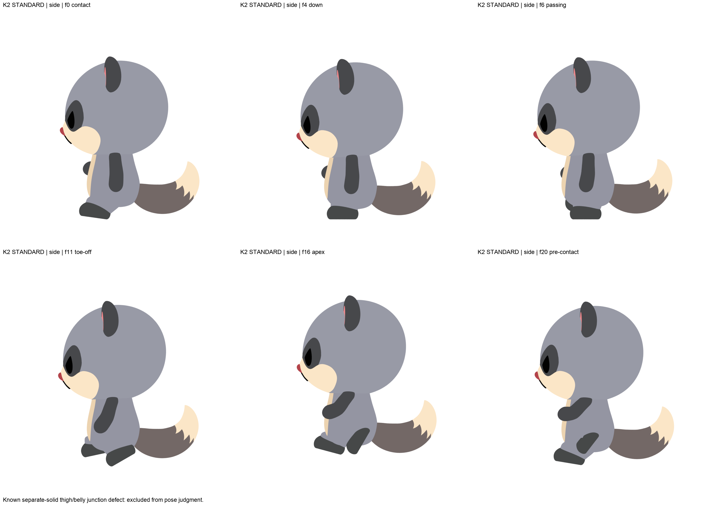
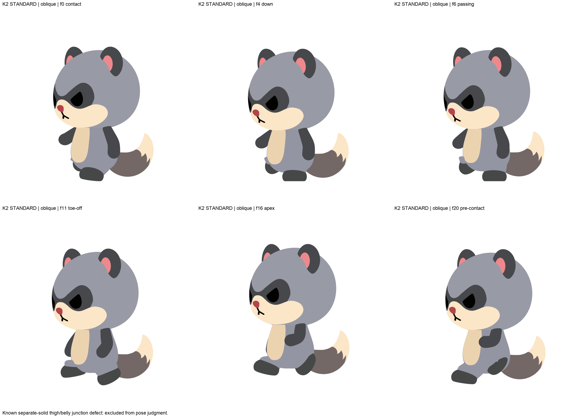
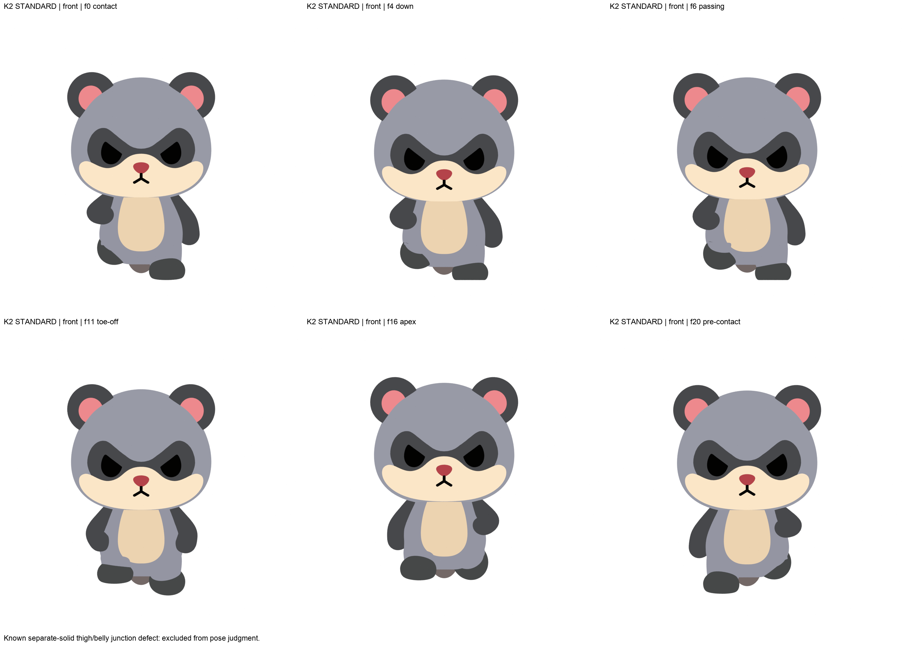
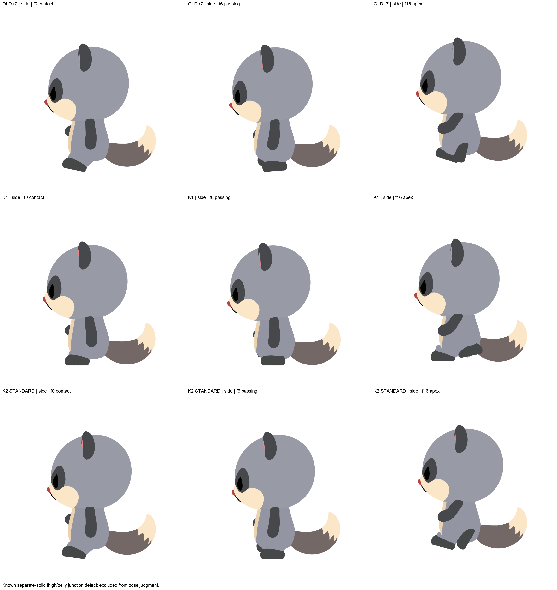
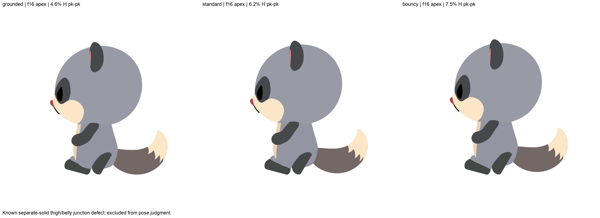

<meta charset="utf-8"><meta name="viewport" content="width=device-width,initial-scale=1"><title>Mozu 走り 戦略比較</title>
<style>:root{--bg:#ECEEF1;--fg:#20242A;--card:#fff;--acc:#C0414C}@media (prefers-color-scheme:dark){:root{--bg:#1B1E22;--fg:#E6E8EB;--card:#2A2E34;--acc:#F07A84}}
body{font:16px/1.75 "Hiragino Sans",system-ui,sans-serif;max-width:1000px;margin:32px auto;padding:0 16px;color:var(--fg);background:var(--bg)}
<h1>走り：キーポーズで作り直した版（骨リグ）</h1>
<p>2026-09-30。いただいた「足首がカタカタして落ち着かない」「定石どおりに動いていない」というご指摘への対応です。今回の目的は、動き（特に足の運び）を確認していただくことです。</p>
<div class="card" style="border:2px solid var(--acc)"><h2>訂正（2026-09-30 公開後の検証で判明）</h2><ul>
<li><b>「足首控えめ」の版は、実際には足首控えめになっていません。</b>蹴りの 2 つのキーだけを弱め、前後のキーを据え置いたため、かえって標準より速く回っています（最大 14.8°/コマ、標準は 9.9°/コマ）。この列は比較に使わないでください。</li>
<li><b>空中の後ろ足の畳み・蹴り上げは、設計より弱くなっています。</b>設計の数値は「足首」の位置でしたが、「足の操作用の骨」の位置として打ち込まれていました。足首を大きく曲げる場面では、この 2 つがずれます。</li>
<li>どちらも直した版を作っています。それまでは、この版は「足の着地と接地中の落ち着き」を確認する用途に限って見てください。</li></ul></div>
<div class="card"><h2>要点</h2><ul>
<li><b>原因</b>：全コマを測ったところ、接地している間も足が 0°→30° と回り続けていました（定石は「接地中は平ら」）。さらに空中では約 80° まで振り上げ、着地の瞬間に膝がカクッと跳ねていました。</li>
<li><b>1 回目の作り直し（K1）は失敗</b>：数値の目標はすべて満たしましたが、「その場で小刻みに足踏み」しているようにしか見えませんでした（下の比較の中段）。</li>
<li><b>2 回目（K2、今回）</b>：Fable と GPT-6 Astra に別々に設計してもらい、統合しました。ポーズの形は旧版をほぼ残しています（形はおおむね正しかったため）。直したのは足の運びです。
 <ul><li>着地したら 1〜2 コマで足が平らに落ち着き、6 コマ以上そのまま保ちます。</li>
 <li>蹴りは、つま先で 1 回だけ行います。</li>
 <li>着地の瞬間の膝の跳ねは、旧版の約 1/3 になりました。</li>
 <li>空中の頂点の足の高さは保っています（0.22）。</li></ul></li></ul></div>
<div class="card"><h2>1. 動画（列：旧版 ／ K2 標準 ／ K2 足首控えめ、行：正面・斜め・横）</h2>
<video src="loop60.mp4" autoplay loop muted playsinline controls></video><p>1/4 速度（足の運びはこちらが見やすいです）：</p><video src="loop15.mp4" loop muted playsinline controls></video></div>
<div class="card"><h2>2. キーポーズ（K2 標準）</h2><p>接地 ／ 沈み込み ／ すれ違い ／ 蹴り出し ／ 空中の頂点 ／ 着地直前</p>
</div>
<div class="card"><h2>3. 比較（横向き、行：旧版 ／ K1（失敗版） ／ K2）</h2></div>
<div class="card"><h2>4. 弾みの強さ（空中の頂点、左からおとなしめ 4.6% ／ 標準 6.2% ／ 弾む 7.5%）</h2><p>静止画では差が小さいです。気になる方向を教えていただければ、その版の動画を作ります。</p></div>
<div class="card"><h2>5. 残っている点（自分の目で確認済み）</h2><ul>
<li><b>腿とお腹の境目</b>：正面・斜めで、腿の灰色がお腹の脇からはみ出して見えるコマがあります。腿を体とは別の部品として作っていることが原因です。体と腿を 1 枚のつながった表面に作り直す方向で、原因を切り分ける実験を進めています。ポーズの判断からは外してください。</li>
<li><b>沈み込み・すれ違い</b>：振り出している脚が体の陰に隠れ、立ち姿に近く見えます（短い脚と、腿がお腹に食い込まない通り道を優先したためです）。</li>
<li><b>着地直後</b>：足が平らに落ち着く動きが速め（1 コマ 8.9°）です。「トン」と見える場合は、足首控えめの版と見比べてください。</li></ul></div>
<div class="card"><h2>6. 見ていただきたいこと</h2><ol>
<li>足首のカタつきは収まりましたか。標準と足首控えめでは、どちらが好みですか。</li>
<li>弾みの強さはどれがよいですか（おとなしめ ／ 標準 ／ 弾む）。</li>
<li>走りとして不自然な点が残っていれば、コマ番号や見え方を教えてください。</li></ol></div>
